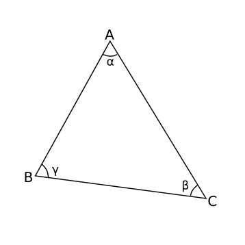
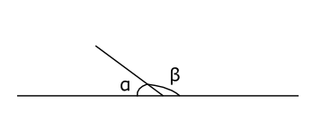
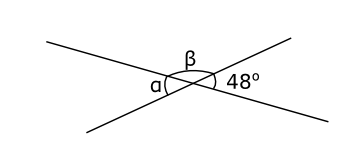
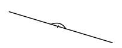
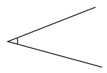
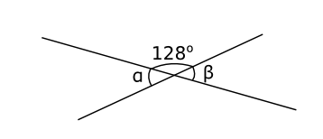
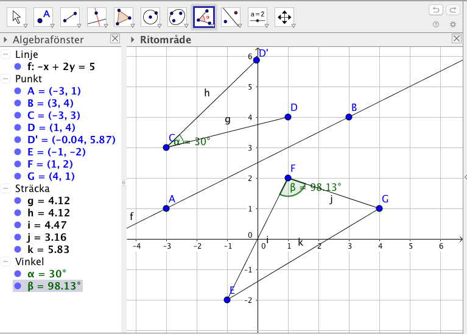
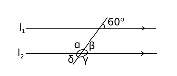
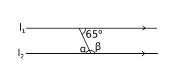
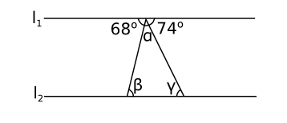

1. Introduktion
Vi börjar med att allmänt titta och repetera vinklar. Endel saker är säkert bekanta från grundskolan men det är ändå bra att börja med grunden.
Vinkeln består av en vinkelspets och två stycken ben, se bilden nedan.

Vi betecknar vinkeln på lite olika sätt beroende på sambandet. Vinkel vid vinkelspetsen \( A \) kan vi skriva som \( \measuredangle A = \alpha = \measuredangle BAC \).

Vi klassificerar vinklar som spetsiga, räta, trubbiga, raka , konvexa och fulla.
| Spetsig | \( 0^{\circ} < \alpha <90^{\circ} \) |
| Rät | \( \alpha =90^{\circ} \) |
| Trubbig | \( 90^{\circ}< \alpha <180^{\circ} \) |
| Rak | \( \alpha =180^{\circ} \) |
| Konvex | \( 180^{\circ} < \alpha < 360^{\circ} \) |
| Full | \( \alpha =360^{\circ} \) |
Inom skolgeometrin använder vi oss av grader som enhet för storleken för vinkeln. Då är en full vinkel 360o. Inom trigonometrin är det lämpligt att använda sig av radianer, då är en full vinkel \( 2\pi \) rad, mera om detta i kurs 7.
Sidovinklar är två vinklar som tillsammans bildar en rak vinkel. Deras vinkelsumma är då \( 180^{\circ} \).

Exempel 1 Visa att vertikalvinklarna \( \alpha \) och \( \beta \) är lika stora.

Bevis
\( \begin{array}{lrcl} \textrm {} & \alpha+\gamma & = & 180^{\circ} \\ \textrm {} & \beta + \gamma & = & 180^{\circ} \\ \textrm {Alltså} & \alpha & = & 180^{\circ} -\gamma \\ \textrm {och } & \beta & = & 180^{\circ} - \gamma \\ \textrm {Vi får att} & \alpha & = & \beta \\ \end{array} \)
Två linjer är parallella om de vertikalvinklar som uppstår då en utomstående linje korsar dem är lika stora.

Exempel 2 Bestäm storleken av vinklarna i figuren nedan.

Exempel 3 Låt \( l_1 \) och \( l_2 \) vara paralella. Bestäm storleken av \( \alpha \) och \( \beta \).

Exempel 4 Bestäm storleken av vinkeln \( \alpha \).

Uppgifter
- Kombinera ihop rätt begrepp med rätt definition.
Välj bland följande påståenden: "Vinkel som är 90 grader.", "Vinkel som är 180 grader.", "Vinkel som är 360 grader.", "Vinkel som är mellan 0 och 90 grader.", "Vinkel som är mellan 90 och 180 grader." och "Vinkel mellan 180 och 360 grader."
Spetsig vinkel Rät vinkel Trubbig vinkel Rak vinkel Konvex vinkel Full vinkel Vinkel som är mellan 0 och 90 grader. Spetsig vinkel Vinkel som är 90 grader. Rät vinkel Vinkel som är mellan 90 och 180 grader. Trubbig vinkel Vinkel som är 180 grader. Rak vinkel Vinkel mellan 180 och 360 grader. Konvex vinkel Vinkel som är 360 grader. Full vinkel - Kombinera rätt typ av vinkel med rätt bild.
Välj bland följande benämningar: Rät vinkel, Rak vinkel, Spetsig vinkel, Full vinkel och Konvex vinkel.


  Full vinkel Konvex vinkel Rät vinkel Rak vinkel Spetsig vinkel - Bestäm storleken av vinklarna.

Jobba med sido- och vertikalvinklar.\( \alpha \) är sidovinkel till 128o:s vinkeln, \( \alpha = 52 \)
\( \alpha \) och \( \beta \) är vertikalvinklar, alltså \( \beta = 52 \)
- Bestäm storleken av vinklarna.
 Jobba med sido- och vertikalvinklar.
Jobba med sido- och vertikalvinklar.\( \alpha \) är sidovinkel till vinkeln 63o, alltså \( \alpha = 117 \).
\( \beta \) är vertikalvinkel till vinkeln 63o, eller sidovinkel till \( \alpha \). Alltså \( \beta = 63 \).
- Rita på GeoGebra
- Två punkter i \( (-3,1) \) och \( (3,4) \). Infoga en linje eller ett streck mellan punkterna.
- En vinkel som är 30o.
- Tre punkter i \( (-1,-2) \), \( (1,2) \) och \( (4,1) \). Bestäm storleken av den större vinkeln.
Punktverktyget hittar du andra knappen till vänster.
Vinkelverktygen hittar du fjäre verktyget till höger. När du mäter en punkt så makera ut från vinkelns högerben till vänsterben.
Något i stil med

- Linjerna \( l_1 \) och \( l_2 \) är parallella. Bestäm storleken av vinklarna \( \alpha \), \( \beta \), \( \gamma \) och \( \delta \).

Påstående \( 30^{\circ} \) \( 60^{\circ} \) \( 90^{\circ} \) \( 120^{\circ} \) \( \alpha \) \( \beta \) \( \gamma \) \( \delta \) Tänk i banor av parallella linjer, verikalvinklar och sidovinklar.
Påstående \( 30^{\circ} \) \( 60^{\circ} \) \( 90^{\circ} \) \( 120^{\circ} \) \( \alpha \) \( \beta \) \( \gamma \) \( \delta \) - Linjerna \( l_1 \) och \( l_2 \) är parallella. Bestäm storleken av vinklarna \( \alpha \) och \( \beta \).

\( \alpha \) och vinkeln 56o är vertikalvinklar, \( \alpha = 65 \).
\( \alpha \) och \( \beta \) är sidovinklar, \( \beta =115 \)
- Är linjerna \( l_1 \) och \( l_2 \) parallella?

Vad krävs för att två linjer är parallella?
Nej, eftersom vinklarna är varandras sidovinklar skall summan av dem vara 180o.
Totala vinkeln är \( 49^{\circ}+130^{\circ}=179^{\circ} \not=180^{\circ} \).
- Linjerna \( l_1 \) och \( l_2 \) är parallella. Bestäm storleken av \( \alpha \), \( \beta \) och \( \gamma \) utan att utnyttja dig av att vinkelsumman för en triangel.

\( \alpha = 38^{\circ} \), eftersom den och vinklarna 68o och 74o bildar en rak vinkel.
\( \beta = 68^{\circ} \), eftersom den är vertikalvinkel till vinkeln 68o.
\( \gamma = 74^{\circ} \), eftersom den är vertikalvinkel till vinkeln 74o.